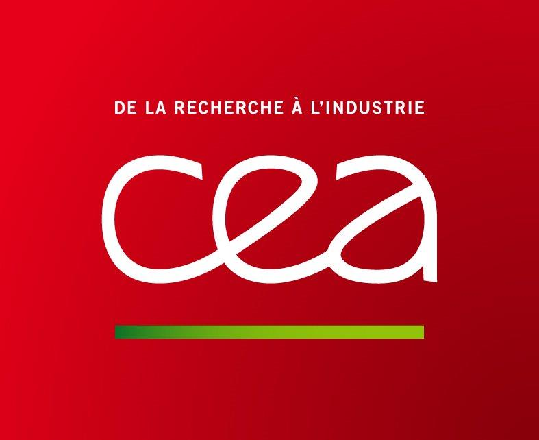

10th Annual US-France Symposium
Dynamic Damage and Fragmentation
May 17–19, 2017 • Ft Walton Beach, FL
Overview: The symposium will be co-hosted by the Department of Mechanical and Aerospace Engineering, University of Florida's Research Engineering and Education Institute (REEF) in Shalimar, FL, USA and the Air Force Research Laboratory (AFRL/RW), Eglin, FL, USA. It is the 10th in a series of US-France symposia of the International Center for Applied Computational Mechanics (ICACM). The ICACM is a partnership between several American and French Universities with the scope of promoting joint research at the forefront of computational mechanics.
Focus: The focus of this 10th symposium is on the latest advances in experimental, theoretical, and computational mechanics aimed at understanding dynamic damage and fragmentation. Materials of interest include metallic materials, geological materials (soils, concrete), energetic and biological materials.
Event Organizers
Chair: Prof. O. Cazacu, University of Florida/REEF
Co-Chair: Dr. Crystal Pasiliao, Air Force Research Lab, RW


